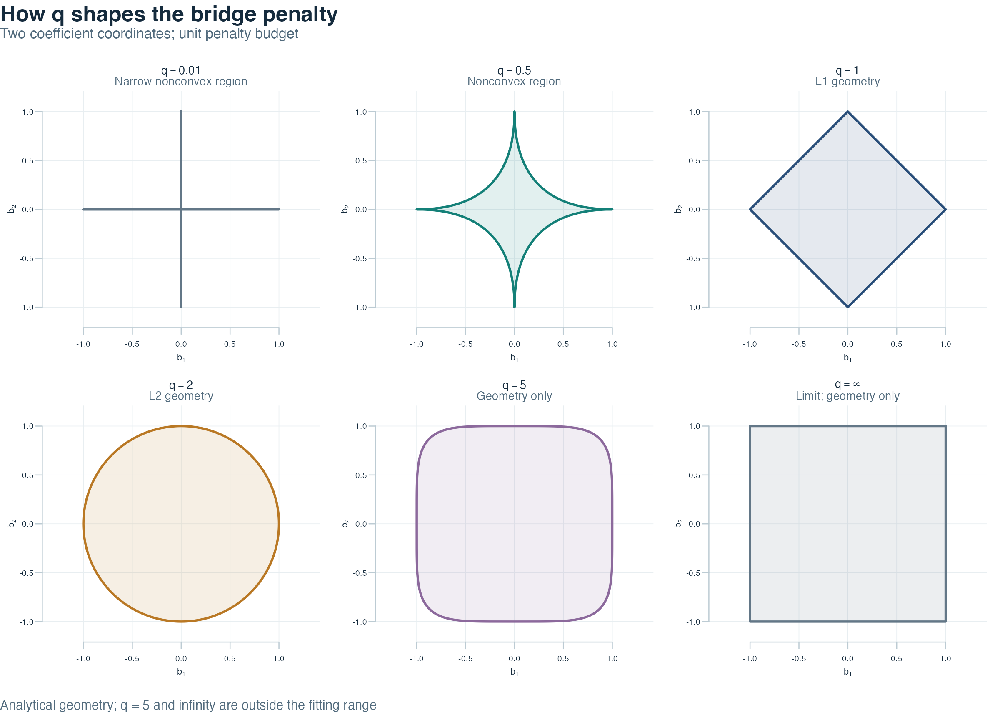
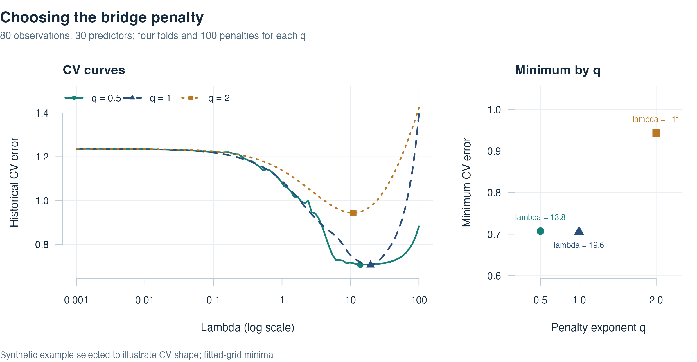

rbridge estimates a bridge regression coefficient path,
optionally subject to linear restrictions. The methods are described by
Yuzbasi, Arashi and
Akdeniz (2021). The examples below are small synthetic
demonstrations; they are not reported results from that article.
Penalty geometry
The bridge exponent q controls the shape of the
coefficient region. In the two-dimensional illustration, b1
and b2 denote two coefficient coordinates in arbitrary
common units. Equation (1) defines the region with penalty budget one
for a finite positive exponent; the shading displays its interior.
The six exponents follow Figure 1 of Yuzbasi, Arashi and
Akdeniz (2021). For q < 1, Equation (1) gives a
nonconvex region with sharp axis tips; q = 1 gives the L1
diamond, and q = 2 the L2 disk. Larger exponents give a
rounder square. The infinity panel is the limiting square in which the
larger absolute coordinate is at most one. These are mathematical
regions, independent of any dataset or fitted coefficients. The fitting
functions support 0 < q <= 2; q = 5
and infinity are shown for geometry only.

Unit bridge penalty regions, following the exponents in Figure 1 of Yuzbasi et al. (2021). All axes have equal scale; q = 5 and infinity are geometry only.
The restricted bridge estimator
Let n be the observation count and p the
predictor count. Write
for the centered, RMS-standardized design,
for the centered response, and
for the standardized slopes. The intercept is excluded. The exponent
sets the penalty shape and
sets its weight relative to the unnormalized residual sum of squares.
The matrix
has m independent restriction rows, and
contains their target values. Equation (2) states the penalized target
with these restrictions; the squared Euclidean norm measures residual
error and the sum is the bridge penalty over predictor indices
.
The package uses local quadratic approximation (LQA) to compute
iterative fits for the target in Equation (2). At a fixed local vector
with nonzero retained coordinates, Equation (3) defines the diagonal
penalty weights
,
the LQA system matrix
and the corresponding base update
.
Here diag puts its arguments on the diagonal, the
superscript
denotes transpose and
denotes the inverse.
Assume that and are nonsingular. Equation (4) expresses the restriction correction from Theorem 3.1 and Equation (3.1) of the article. The vector converts the base update’s restriction residual into correction multipliers; is the resulting restricted update.
Substituting the first line of Equation (4) into its second gives the article’s weighted projection formula. Multiplication by cancels the restriction residual, so this ideal LQA step satisfies . The implementation repeats the update using its historical elimination threshold and stopping rule; post-update thresholding can affect the returned restriction residual. The closed form is conditional on the current LQA weights, not a global-solution certificate for a nonconvex penalty. Restrictions concern standardized slopes; the package subsequently returns original-scale slopes and a reconstructed intercept. See the scale check below and Section 3.1 of the article.
The following base-R code reproduces the geometry without fitting a model.
Show the penalty-region plotting code
penalty_boundary <- function(q) {
if (is.infinite(q)) {
return(matrix(c(1, 1, -1, 1, -1, -1, 1, -1, 1, 1),
ncol = 2, byrow = TRUE))
}
# Each share allocates the unit budget between the two absolute powers.
share <- seq(0, 1, length.out = 1001)
a <- share^(1 / q)
b <- (1 - share)^(1 / q)
rbind(cbind(a, b), cbind(rev(a), -rev(b)),
cbind(-a, -b), cbind(-rev(a), rev(b)))
}
draw_penalty_regions <- function() {
previous <- par(no.readonly = TRUE)
on.exit({ layout(1); par(previous) })
q_geometry <- c(0.01, 0.5, 1, 2, 5, Inf)
colors <- c("#637787", "#148078", "#294E79", "#B97824", "#8C699C", "#637787")
subtitles <- c("Narrow nonconvex region", "Nonconvex region", "L1 geometry",
"L2 geometry", "Geometry only", "Limit; geometry only")
ink <- "#152B3D"
layout(matrix(seq_along(q_geometry), nrow = 2, byrow = TRUE))
par(oma = c(2.8, 0, 4.1, 0), mar = c(3.1, 3.2, 2.8, 1),
bg = "white", fg = ink, col.axis = ink, col.lab = ink,
family = "sans", las = 1, mgp = c(1.8, 0.65, 0),
cex.axis = 0.75, cex.lab = 0.85)
ticks <- seq(-1, 1, by = 0.5)
for (i in seq_along(q_geometry)) {
boundary <- penalty_boundary(q_geometry[i])
plot(NA_real_, xlim = c(-1.12, 1.12), ylim = c(-1.12, 1.12),
asp = 1, axes = FALSE, xlab = expression(b[1]), ylab = expression(b[2]))
abline(h = ticks, v = ticks, col = "#E8EEF1", lwd = 0.7)
polygon(boundary, col = grDevices::adjustcolor(colors[i], alpha.f = 0.12),
border = colors[i], lwd = 2.2)
axis(1, at = ticks, col = "#BCCBD3", col.ticks = "#BCCBD3")
axis(2, at = ticks, col = "#BCCBD3", col.ticks = "#BCCBD3")
title(if (is.infinite(q_geometry[i])) expression(q == infinity)
else bquote(q == .(q_geometry[i])), line = 1.5,
col.main = ink, cex.main = 1.05)
mtext(subtitles[i], side = 3, line = 0.25, cex = 0.7, col = "#526B7D")
}
mtext("How q shapes the bridge penalty", side = 3, outer = TRUE,
line = 2.3, adj = 0, font = 2, cex = 1.3, col = ink)
mtext("Two coefficient coordinates; unit penalty budget", side = 3,
outer = TRUE, line = 1, adj = 0, cex = 0.85, col = "#526B7D")
mtext("Analytical geometry; q = 5 and infinity are outside the fitting range",
side = 1, outer = TRUE, line = 1.2, adj = 0, cex = 0.78, col = "#526B7D")
}
draw_penalty_regions()Prepare the inputs
Use a finite numeric matrix X with one observation per
row and one predictor per column, together with a matching response
vector y. Constant predictors are rejected. Any treatment
of missing values belongs in your documented data preparation before
fitting.
The example has 80 observations and 30 correlated predictors. Their population covariance decreases with the distance between predictor indices, with adjacent predictor correlation 0.5. Only the first three population slopes are nonzero; the intercept is one and the Gaussian noise standard deviation is 0.75.
set.seed(2019)
n <- 80
p <- 30
Sigma <- outer(seq_len(p), seq_len(p), function(i, j) 0.5^abs(i - j))
X <- matrix(rnorm(n * p), n, p) %*% chol(Sigma)
colnames(X) <- paste0("x", seq_len(p))
beta <- c(1, 0.5, -0.2, rep(0, p - 3))
sigma <- 0.75
y <- as.numeric(1 + X %*% beta + sigma * rnorm(n))
lambda <- c(5, 2, 1)This dataset was selected for an illustrative CV curve with a visible interior minimum. Before fitting, the noise standard deviations 0.75, 1 and 1.25 were specified in that order, sharing the same predictors and standard-normal noise. The first candidate for which every exponent had an interior minimum and both endpoint CV errors at least 10% above that minimum was to be used. The first candidate, 0.75, passed; the other two were not fitted. This selection is for teaching the curve shape and is not an independent predictive performance study.
Fit and inspect a path
The penalty exponent q lies in (0, 2].
Values one and two give the L1 and L2 penalty forms. All supported
exponents use the historical local quadratic approximation and
thresholding algorithm. In particular, the package does not certify a
global solution for a nonconvex penalty.
path <- bridge(X, y, q = 2, lambda = lambda)
knitr::kable(coef(path)[1:6, , drop = FALSE], digits = 3,
caption = "Demonstration path: intercept and first five slopes")| 5 | 2 | 1 | |
|---|---|---|---|
| (Intercept) | 1.050 | 1.064 | 1.070 |
| x1 | 1.242 | 1.331 | 1.366 |
| x2 | 0.287 | 0.258 | 0.245 |
| x3 | -0.080 | -0.091 | -0.094 |
| x4 | 0.135 | 0.152 | 0.159 |
| x5 | -0.024 | -0.041 | -0.049 |
predict(path, newx = X[1:3, , drop = FALSE], s = 2)
#> [1] 1.5145309 0.1759466 -1.0394874coef(path) returns the complete path. A numeric selector
chooses an exact fitted penalty; it does not interpolate between
penalties. Returned slopes and the reconstructed intercept are on the
original predictor scale.
State a restriction on the correct scale
Restrictions apply to standardized predictor slopes, after centering each predictor and dividing by its root-mean-square centered deviation. The intercept is excluded. Here the fourth standardized slope is restricted to zero.
R <- matrix(0, nrow = 1, ncol = p)
R[1, 4] <- 1
r <- matrix(0, nrow = 1)
restricted <- rbridge(X, y, q = 2, R = R, r = r, lambda = lambda)
scale <- sqrt(colMeans(sweep(X, 2, colMeans(X), "-")^2))
standardized_slopes <- restricted$betas[-1, , drop = FALSE] * scale
max(abs(sweep(R %*% standardized_slopes, 1, as.numeric(r), "-")))
#> [1] 0This residual checks the supplied restriction on its fitting scale. Applying the same matrix directly to returned slopes generally describes a different restriction when predictor scales differ. Thresholding can also affect the residual, so this check is not a convergence certificate. Restriction rows must be linearly independent; unresolved linear systems fail explicitly.
Select a penalty with cross-validation
Compare penalty exponents q = 0.5, 1, 2 on the same
observations, restriction and four contiguous folds. Each exponent uses
the same 100 logarithmically spaced penalties from 0.001 to 100. This
wider grid replaces the short 1-to-5 range used in the path
illustration; its endpoints are fixed before fitting. For each exponent,
lambda.min selects a fitted penalty with the lowest
historical CV error. If minima tie, the package selects the largest tied
penalty.
lambda_cv <- exp(seq(log(100), log(0.001), length.out = 100))
q_values <- c(0.5, 1, 2)
cv_fits <- lapply(q_values, function(q) {
cv.rbridge(X, y, q = q, R = R, r = r, lambda = lambda_cv,
nfolds = 4, num_threads = 1)
})
names(cv_fits) <- paste("q =", q_values)
cv_summary <- data.frame(
q = q_values,
lambda_min = vapply(cv_fits, function(fit) fit$lambda.min, numeric(1)),
minimum_cv_error = vapply(cv_fits, function(fit) {
fit$cve[match(fit$lambda.min, fit$lambda)]
}, numeric(1))
)
knitr::kable(cv_summary, digits = c(1, 4, 4), row.names = FALSE,
col.names = c("q", "Selected lambda", "Minimum CV error"),
caption = "Fitted-grid CV minima on the same data and folds")| q | Selected lambda | Minimum CV error |
|---|---|---|
| 0.5 | 13.8489 | 0.7071 |
| 1.0 | 19.6304 | 0.7055 |
| 2.0 | 10.9750 | 0.9434 |
cv <- cv_fits[["q = 2"]]
coef(cv, s = "lambda.min")[1:6, , drop = FALSE]
#> 10.9749876549306
#> (Intercept) 1.01873514
#> x1 1.10767258
#> x2 0.31116095
#> x3 -0.01258222
#> x4 0.00000000
#> x5 0.03421107
predict(cv, newx = X[1:3, , drop = FALSE])
#> [1] 1.3795412 0.4005670 -0.7299014CV retains the original contiguous folds, global preprocessing and
historical error-bar calculation. Each of the four folds contains 20
observations. The coefficient display above shows the intercept and
first five slopes; the full matrix is available from
coef(cv, s = "lambda.min"). Prediction defaults to
lambda.min; coefficient extraction defaults to
lambda.1se. Record your chosen selector when reporting
results. The comparison below plots the returned errors directly and
marks the selected grid minima. The right panel uses a closer error
scale to make the three minima readable. It omits the historical error
bars and variable counts for clarity; plot(cv) still
displays the original single-object plot.

Synthetic demonstration: CV curves and fitted-grid minima for q = 0.5, 1 and 2; the right panel uses a closer error scale.
These minima describe this fixed synthetic example and the specified
penalty grid. They do not establish a preferred exponent on other data
or certify a global solution for q = 0.5. For independent
plotting or export, the complete base-R drawing function is available
below; it requires no additional package.
draw_cv_comparison <- function(fits, summary) {
previous <- par(no.readonly = TRUE)
on.exit({ layout(1); par(previous) })
colors <- c("#148078", "#294E79", "#B97824")
shapes <- c(16, 17, 15)
styles <- c(1, 2, 3)
ink <- "#152B3D"
grid <- "#E8EEF1"
layout(matrix(1:2, nrow = 1), widths = c(1.8, 1))
par(oma = c(1.8, 0, 3.8, 0), mar = c(4.2, 4.5, 2.4, 1.1),
bg = "white", fg = ink, col.axis = ink, col.lab = ink,
family = "sans", las = 1, cex.axis = 0.85, cex.lab = 0.95)
errors <- unlist(lapply(fits, function(fit) fit$cve))
limits <- range(errors)
limits <- limits + c(-0.04, 0.09) * diff(limits)
plot(range(log10(fits[[1]]$lambda)), limits, type = "n", axes = FALSE,
xlab = "Lambda (log scale)", ylab = "Historical CV error")
ticks <- -3:2
abline(h = pretty(limits), v = ticks, col = grid, lwd = 0.8)
axis(1, at = ticks, labels = c("0.001", "0.01", "0.1", "1", "10", "100"),
col = "#BCCBD3", col.ticks = "#BCCBD3")
axis(2, col = "#BCCBD3", col.ticks = "#BCCBD3")
for (i in seq_along(fits)) {
fit <- fits[[i]]
lines(log10(fit$lambda), fit$cve, col = colors[i], lwd = 2.3,
lty = styles[i])
selected <- match(fit$lambda.min, fit$lambda)
points(log10(fit$lambda[selected]), fit$cve[selected], pch = shapes[i],
col = colors[i], cex = 1.25)
}
legend("topleft", legend = names(fits), col = colors, pch = shapes,
lty = styles, lwd = 2.3, ncol = 3, bty = "n", cex = 0.83)
title("CV curves", adj = 0, col.main = ink, cex.main = 1.1)
par(mar = c(4.2, 4.8, 2.4, 1.1))
minimum_limits <- range(summary$minimum_cv_error)
padding <- max(diff(minimum_limits), 0.002) * 0.4
minimum_limits <- minimum_limits + c(-padding, padding)
plot(summary$q, summary$minimum_cv_error, type = "n", axes = FALSE,
xlim = c(0.25, 2.25), ylim = minimum_limits,
xlab = "Penalty exponent q", ylab = "Minimum CV error")
abline(h = pretty(minimum_limits, n = 4), v = summary$q, col = grid, lwd = 0.8)
axis(1, at = summary$q, col = "#BCCBD3", col.ticks = "#BCCBD3")
axis(2, at = pretty(minimum_limits, n = 4), col = "#BCCBD3",
col.ticks = "#BCCBD3")
points(summary$q, summary$minimum_cv_error, pch = shapes, col = colors,
cex = 1.45)
text(summary$q, summary$minimum_cv_error,
labels = paste0("lambda = ", formatC(summary$lambda_min, digits = 3,
format = "g")),
pos = c(3, 1, 3), offset = 0.8, cex = 0.68, col = colors)
title("Minimum by q", adj = 0, col.main = ink, cex.main = 1.1)
mtext("Choosing the bridge penalty", side = 3, outer = TRUE,
line = 2, adj = 0, font = 2, cex = 1.3, col = ink)
mtext("80 observations, 30 predictors; four folds and 100 penalties for each q", side = 3,
outer = TRUE, line = 0.8, adj = 0, cex = 0.85, col = "#526B7D")
mtext("Synthetic example selected to illustrate CV shape; fitted-grid minima", side = 1,
outer = TRUE, line = 0.7, adj = 0, cex = 0.78, col = "#526B7D")
}
draw_cv_comparison(cv_fits, cv_summary)Check the build and save provenance
rbridge_info()
#> $version
#> [1] "1.0.4"
#>
#> $openmp
#> [1] TRUE
#>
#> $openmp_version
#> [1] 202011OpenMP support is a property of the installed build. Unsupported toolchains run CV sequentially. Supported builds use at most the requested number of workers or the number of folds, whichever is smaller. Set BLAS threads to one before starting R when using fold-level parallelism.
Record the package version, sessionInfo(), seed, penalty
grid, input definitions and preprocessing with each analysis. The solver
retains its historical stopping rule and iteration cap and does not
report a convergence certificate. The reproducibility guide details the
validation scope and the materials needed for a complete reproduction of
the published study.